| Symbol |
Description |
8253 | Description: Programmable Interval Timer, PDIP-24
Keys: Timer Counter
Datasheet: http://www.cpcwiki.eu/imgs/e/e3/8253.pdf |
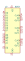
8254 | Description: Programmable Interval Timer, PDIP-24
Keys: Timer Counter
Datasheet: http://www.scs.stanford.edu/10wi-cs140/pintos/specs/8254.pdf |
8284 | Description: Clock Generator and Driver for i8086/88 Microcontrollers, PDIP-18
Keys: Clock Generator
Datasheet: http://www.cpu-galaxy.at/cpu/ram%20rom%20eprom/other_intel_chips/other_intel-Dateien/D8284A_Datasheet.pdf |
82C54 | Description: CHMOS Programmable Interval Timer, PDIP-24
Keys: Timer Counter
Datasheet: http://download.intel.com/design/archives/periphrl/docs/23124406.pdf |
82C54_PLCC | Description: CHMOS Programmable Interval Timer, PLCC-28
Keys: Timer Counter
Datasheet: http://download.intel.com/design/archives/periphrl/docs/23124406.pdf |
AD9513 | Description: 800 MHz, 3 Outputs, Clock Distribution IC, Divider, Delay Adjust, LFCSP-32
Keys: clock distribution LVDS CMOS
Datasheet: https://www.analog.com/media/en/technical-documentation/data-sheets/AD9513.pdf |
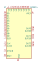
AD9514 | Description: 1.6 GHz, 3 Outputs, Clock Distribution IC, Divider, Delay Adjust, LFCSP-32
Keys: clock distribution LVPECL LVDS CMOS
Datasheet: https://www.analog.com/media/en/technical-documentation/data-sheets/AD9514.pdf |
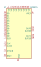
AD9515 | Description: 1.6 GHz, 2 Outputs, Clock Distribution IC, Divider, Delay Adjust, LFCSP-32
Keys: clock distribution LVPECL LVDS CMOS
Datasheet: https://www.analog.com/media/en/technical-documentation/data-sheets/AD9515.pdf |
ICM7209 | Description: Timebase generator, DIP-8
Keys: Timebase generator
Datasheet: http://pdf.datasheetcatalog.com/datasheets/320/500974_DS.pdf |
ICM7555xB | Description: CMOS General Purpose Timer, 555 compatible, SOIC-8
Keys: single timer 555
Datasheet: http://www.intersil.com/content/dam/Intersil/documents/icm7/icm7555-56.pdf |
ICM7555xP | Description: CMOS General Purpose Timer, 555 compatible, PDIP-8
Keys: single timer 555
Datasheet: http://www.intersil.com/content/dam/Intersil/documents/icm7/icm7555-56.pdf |
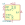
ICM7556 | Description: Dual CMOS General Purpose Timer, DIP-14/SOIC-14
Keys: dual timer 556
Datasheet: http://www.intersil.com/content/dam/Intersil/documents/icm7/icm7555-56.pdf |
LM555xM | Description: Timer, 555 compatible, SOIC-8
Keys: single timer 555
Datasheet: http://www.ti.com/lit/ds/symlink/lm555.pdf |
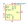
LM555xMM | Description: Precision Timers, 555 compatible, VSSOP-8
Keys: single timer 555
Datasheet: http://www.ti.com/lit/ds/symlink/lm555.pdf |
LM555xN | Description: Timer, 555 compatible, PDIP-8
Keys: single timer 555
Datasheet: http://www.ti.com/lit/ds/symlink/lm555.pdf |
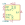
LM556 | Description: Dual Timer, DIP-14/SOIC-14
Keys: dual timer
Datasheet: http://www.ti.com/lit/ds/symlink/lm556.pdf |
LMC555xM | Description: CMOS Timer, 555 compatible, SOIC-8
Keys: single timer 555
Datasheet: http://www.ti.com/lit/ds/symlink/lmc555.pdf |
LMC555xMM | Description: CMOS Timer, 555 compatible, VSSOP-8
Keys: single timer 555
Datasheet: http://www.ti.com/lit/ds/symlink/lmc555.pdf |
LMC555xN | Description: CMOS Timer, 555 compatible, PDIP-8
Keys: single timer 555
Datasheet: http://www.ti.com/lit/ds/symlink/lmc555.pdf |
LMC555xTP | Description: CMOS Timer, DSBGA-8
Keys: single timer 555
Datasheet: http://www.ti.com/lit/ds/symlink/lmc555.pdf |
LTC6902 | Description: Multiphase oscillator, spread spectrum frequency modulation, MSOP-10
Keys: clock generator dual triple quad signal
Datasheet: https://www.analog.com/media/en/technical-documentation/data-sheets/6902f.pdf |
LTC6909 | Description: Multiphase oscillator, spread spectrum frequency modulation, MSOP-16
Keys: clock generator signal
Datasheet: https://www.analog.com/media/en/technical-documentation/data-sheets/6909fa.pdf |
LTC6993xS6-1 | Description: TimerBlox Monostable Pulse Generator (One Shot), Rising-edge input, non-retriggerable, TSOT-23-6
Keys: Timer TimerBlox monostable pulse
Datasheet: https://www.analog.com/media/en/technical-documentation/data-sheets/69931234fc.pdf |
LTC6993xS6-2 | Description: TimerBlox Monostable Pulse Generator (One Shot), Rising-edge input, retriggerable, TSOT-23-6
Keys: Timer TimerBlox monostable pulse
Datasheet: https://www.analog.com/media/en/technical-documentation/data-sheets/69931234fc.pdf |
LTC6993xS6-3 | Description: TimerBlox Monostable Pulse Generator (One Shot), Falling-edge input, non-retriggerable, TSOT-23-6
Keys: Timer TimerBlox monostable pulse
Datasheet: https://www.analog.com/media/en/technical-documentation/data-sheets/69931234fc.pdf |
LTC6993xS6-4 | Description: TimerBlox Monostable Pulse Generator (One Shot), Falling-edge input, retriggerable, TSOT-23-6
Keys: Timer TimerBlox monostable pulse
Datasheet: https://www.analog.com/media/en/technical-documentation/data-sheets/69931234fc.pdf |
LTC6994xDCB-1 | Description: TimerBlox Delay Block, Programmable, Noise Discriminator, Rising or Falling Edge, DFN-6
Keys: TimerBlox delay block noise discriminator
Datasheet: https://www.analog.com/media/en/technical-documentation/data-sheets/699412fb.pdf |
LTC6994xDCB-2 | Description: TimerBlox Debouncer, Programmable, Noise Discriminator, Rising and Falling Edges, DFN-6
Keys: TimerBlox debouncer noise discriminator
Datasheet: https://www.analog.com/media/en/technical-documentation/data-sheets/699412fb.pdf |
LTC6994xS6-1 | Description: TimerBlox Delay Block, Programmable, Noise Discriminator, Rising or Falling Edge, TSOT-23-6
Keys: TimerBlox delay block noise discriminator
Datasheet: https://www.analog.com/media/en/technical-documentation/data-sheets/699412fb.pdf |
LTC6994xS6-2 | Description: TimerBlox Debouncer, Programmable, Noise Discriminator, Rising and Falling Edges, TSOT-23-6
Keys: TimerBlox debouncer noise discriminator
Datasheet: https://www.analog.com/media/en/technical-documentation/data-sheets/699412fb.pdf |
MC1455B | Description: Timer, 555 compatible, SOIC-8
Keys: single timer 555
Datasheet: https://www.onsemi.com/pub/Collateral/MC1455-D.PDF |
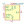
MC1455P | Description: Timer, 555 compatible, PDIP-8
Keys: single timer 555
Datasheet: https://www.onsemi.com/pub/Collateral/MC1455-D.PDF |
MN3101 | Description: Clock Generator Driver/Driver for MN3000 Series BBD (bucket brigade device), -8V to -16V, DIP-8
Keys: Matsushita Panasonic BBD CMOS
Datasheet: http://www.experimentalistsanonymous.com/diy/Datasheets/MN3101.pdf |
MN3102 | Description: Clock Generator Driver/Driver for MN3000 Series BBD (bucket brigade device), 4V to 10V, DIP-8
Keys: Matsushita Panasonic BBD CMOS
Datasheet: http://www.experimentalistsanonymous.com/diy/Datasheets/MN3102.pdf |
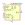
NA555D | Description: Precision Timers, 555 compatible, SOIC-8
Keys: single timer 555
Datasheet: http://www.ti.com/lit/ds/symlink/ne555.pdf |
NA555P | Description: Precision Timers, 555 compatible, PDIP-8
Keys: single timer 555
Datasheet: http://www.ti.com/lit/ds/symlink/ne555.pdf |
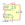
NA556 | Description: Dual Precision Timers, DIP-14/SOIC-14/SSOP-14
Keys: dual timer
Datasheet: http://www.ti.com/lit/ds/symlink/se556.pdf |
NE555D | Description: Precision Timers, 555 compatible, SOIC-8
Keys: single timer 555
Datasheet: http://www.ti.com/lit/ds/symlink/ne555.pdf |
NE555P | Description: Precision Timers, 555 compatible, PDIP-8
Keys: single timer 555
Datasheet: http://www.ti.com/lit/ds/symlink/ne555.pdf |
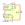
NE556 | Description: Dual Precision Timers, DIP-14/SOIC-14
Keys: dual timer
Datasheet: http://www.ti.com/lit/ds/symlink/ne556.pdf |
NE567 | Description: Tone Decoder/Phase-Locked Loop, DIP-8/SOIC-8
Keys: tone decoder PLL
Datasheet: http://www.ti.com/lit/ds/symlink/lm567.pdf |
PL611-01-xxxT | Description: Programmable Clock, Dual Programmable Clock Outputs, Up To 200MHz, SOT-23-6
Keys: clock generator dual programmable
Datasheet: http://ww1.microchip.com/downloads/en/DeviceDoc/PL611-01.pdf |
SA555D | Description: Precision Timers, 555 compatible, SOIC-8
Keys: single timer 555
Datasheet: http://www.ti.com/lit/ds/symlink/ne555.pdf |
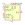
SA555P | Description: Precision Timers, 555 compatible, PDIP-8
Keys: single timer 555
Datasheet: http://www.ti.com/lit/ds/symlink/ne555.pdf |
SA556 | Description: Dual Precision Timers, DIP-14/SOIC-14
Keys: dual timer
Datasheet: http://www.ti.com/lit/ds/symlink/ne556.pdf |
SE555D | Description: Precision Timers, 555 compatible, SOIC-8
Keys: single timer 555
Datasheet: http://www.ti.com/lit/ds/symlink/ne555.pdf |
SE555P | Description: Precision Timers, 555 compatible, PDIP-8
Keys: single timer 555
Datasheet: http://www.ti.com/lit/ds/symlink/ne555.pdf |
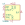
SE556 | Description: Dual Precision Timers, DIP-14/SOIC-14
Keys: dual timer
Datasheet: http://www.ti.com/lit/ds/symlink/ne556.pdf |
SE567 | Description: Tone Decoder/Phase-Locked Loop, DIP-8/SOIC-8
Keys: tone decoder PLL
Datasheet: http://www.ti.com/lit/ds/symlink/lm567.pdf |
SY58031U | Description: 1:8 CML Fanout Buffer 75fsRMS, QFN-32
Keys: CML 2.5V/3.3V differential LVPECL LVDS
Datasheet: http://ww1.microchip.com/downloads/en/DeviceDoc/sy58031u.pdf |
SY58032U | Description: 1:8 LVPECL Fanout Buffer 75fsRMS, QFN-32
Keys: 2.5V/3.3V differential LVPECL LVDS
Datasheet: http://ww1.microchip.com/downloads/en/DeviceDoc/sy58032u.pdf |
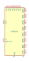
SY58033U | Description: 1:8 400mV LVPECL Fanout Buffer 75fsRMS, QFN-32
Keys: 2.5V/3.3V differential LVPECL LVDS
Datasheet: http://ww1.microchip.com/downloads/en/DeviceDoc/sy58033u.pdf |
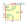
TLC555xD | Description: Single LinCMOS Timer, 555 compatible, SOIC-8
Keys: single timer 555
Datasheet: http://www.ti.com/lit/ds/symlink/tlc555.pdf |
TLC555xP | Description: Single LinCMOS Timer, 555 compatible, PDIP-8
Keys: single timer 555
Datasheet: http://www.ti.com/lit/ds/symlink/tlc555.pdf |
TLC555xPS | Description: Single LinCMOS Timer, 555 compatible, VSSOP-8
Keys: single timer 555
Datasheet: http://www.ti.com/lit/ds/symlink/tlc555.pdf |
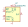
TLC555xPW | Description: Single LinCMOS Timer, TSSOP-14
Keys: single timer 555
Datasheet: http://www.ti.com/lit/ds/symlink/tlc555.pdf |
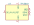
TPL5010 | Description: Timer, Nano Power, Watchdog, 35 nA, 100 ms to 7200 s, VDD 1.8V to 5.5V, Iout max 1mA
Keys: timer watchdog nano wake done
Datasheet: http://www.ti.com/lit/ds/symlink/tpl5010.pdf |
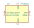
TPL5110 | Description: Timer, Nano Power, Active-Low, 35 nA, 100 ms to 7200 s, VDD 1.8V to 5.5V, Iout max 1mA, SOT-23-6
Keys: timer active-low nano wake done
Datasheet: http://www.ti.com/lit/ds/symlink/tpl5110.pdf |
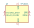
TPL5111 | Description: Timer, Nano Power, Active-High, 35 nA, 100 ms to 7200 s, VDD 1.8V to 5.5V, Iout max 1mA, SOT-23-6
Keys: timer active-high nano wake done
Datasheet: http://www.ti.com/lit/ds/symlink/tpl5111.pdf |